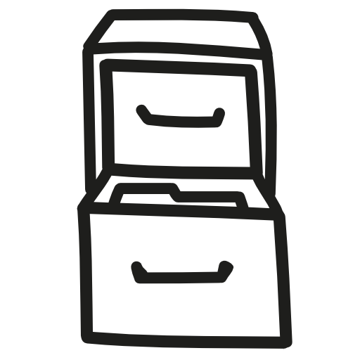
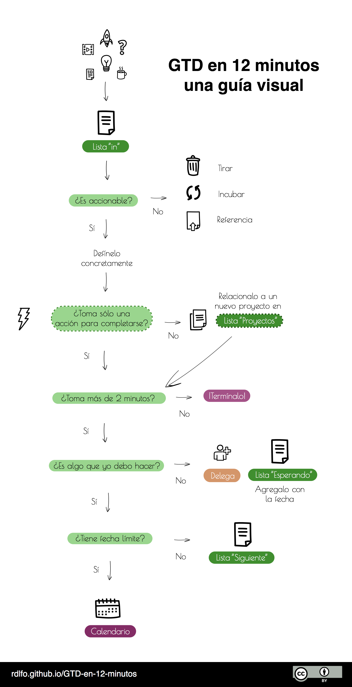
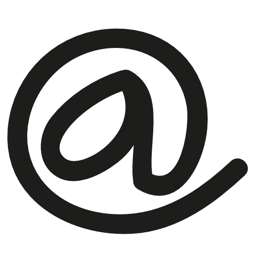
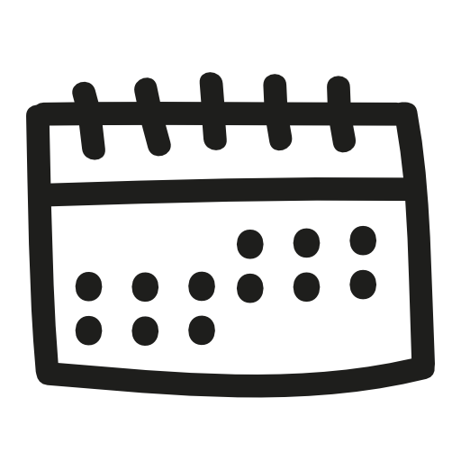
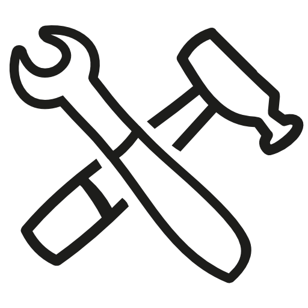

Guía rápida para comprender el sistema GTD en español.
GTD significa "Getting Things Done" o en español, "Organízate con eficacia". GTD es un método de trabajo que sirve para gestionar tus ideas y pendientes. El objetivo de GTD no es solamente ser una lista de tareas, sino un sistema simple e integral que te permita avanzar y completar tus proyectos.
Con él podrás monitorear y completar ideas como "Conquistar el mundo", o actividades tales como "Hablar con Katia a las 10:15 a.m. para discutir sobre nuestro nuevo proyecto millonario".
El sistema GTD asume que nuestro inconsciente es malo para pensar activamente que es lo que deberíamos estar haciendo. Por ejemplo: si tienes hambre y no hay comida en tu casa, posiblemente te darás cuenta muy tarde que había que hacer despensa. GTD te dará una forma de trabajo que hará que esto no te vuelva a ocurrir .
Todos tenemos actividades en las que debemos, y algunas, en las que queremos trabajar, pero estas ideas las dejamos olvidadas en algún lado y permitimos al azar y a las ganas de recordárnoslas.
Jessica Kerr lo dijo perfectamente:
Imagina que tu cerebro es un pizarrón. ¿Lo tienes cubierto de listas y mensajes de NO BORRAR? ¿Te quedará algo de espacio para dibujar libremente y jugar con tus ideas?
El principio de GTD es darte un plan para convertir tus tareas en acciones concretas.
Cuando te acostumbres a usarlo y a confiar en él, empezarás a sentirte más en control de tu vida. Esto reducirá tus niveles de estrés y te conseguirá tiempo para relajarte, sin mencionar que te acercará a terminar lo que deseas.
GTD es tan simple y sencillo que puedes utilizar lápiz y papel para manejarlo.

Para comenzar, necesitarás crear cinco listas distintas:
Estas listas son la columna vertebral del sistema GTD y necesitan ser revisadas frecuentemente. Puedes agregar además de esto un calendario o agenda que te permita anotar tareas que deben ser cumplidas en una fecha en específico.
En esta lista capturarás todas las ideas, actividades, preguntas y pendientes que surjan en tu día. Puede ser una orden de tu jefe, un trabajo, una idea para tu casa ... Toda actividad pasa primero por esta lista.
Si es tu primera vez en que usas GTD, deberás de vaciar todos tus pendientes y actividades aquí.
Si apenas empezaste a usar GTD entonces probablemente tengas muchas actividades en tu lista. El procesarlas puede tomarte un tiempo, pero una vez que termines deberás de procesar esta lista continuamente.
Para iniciar necesitas preguntarte si la idea que estás revisando es accionable. Es decir: ¿puedes hacer algo con el pendiente? Si la respuesta es NO vas a hacer una de las siguientes cosas:
El incubarlo se refiere a las actividades que te gustaría recordar en una fecha en el futuro. Para incubar, solo anota la idea en tu calendario en el día que crees que lo aprovecharás. Ej. Releer el artículo de física cuántica la próxima semana.
Si la entrada en tu lista ES accionable (se puede hacer algo al respecto) hazte y responde la pregunta: ¿Cuál es el siguiente paso?. Este paso deberá de ser una acción en concreto.
Por ejemplo: si tuvieras una actividad marcada como "Avanzar en el trabajo de investigación" deberás de convertirla a una más específica como "Citar fuentes en formato APA."
Esta es una de las reglas más importantes del método GTD. El siguiente paso debe ser siempre concreto para poder avanzar en tus pendientes. El tomarte unos minutos para redactarlo de esta manera removerá en el futuro parte de tu resistencia a iniciar el trabajo.
Una vez concretada, ¿es posible terminarla en dos minutos? Si es así entonces no pierdas el tiempo y complétala de una vez. Entre menos pendientes tengas en tu lista, mucho mejor.
Si la tarea fuera más larga, entonces solo queda hacer uno de los siguientes:
Delegar es dejar la actividad a cargo de otra persona y esperar el resultado. Si decides delegar, agrega la actividad en tu lista de Esperando.
Diferir implica que la actividad no puede realizarse en este momento y la atenderás en el futuro, idealmente la realizarás lo más pronto posible. Si escoges diferir, agrega la tarea en tu lista de "Siguiente". Es normal que la mayoría de tus tareas las termines añadiendo a esta lista.
Por último, si la tarea en cuestión necesita más de una acción para completarse deberás agregar una entrada a tu lista de "Proyectos" que agrupe esas tareas. Hablaremos más sobre esto en los siguientes apartados.
Para resumir:

Esta es la lista en la que se añaden las actividades que Siguen. En otras palabras, esta lista contiene actividades que "deben hacerse lo antes posible". Debes de revisar esta lista en tus tiempos muertos.
Cualquier tarea que requiera más de una acción para completarse puede considerarse como un Proyecto. En sí, esta es una lista con los nombres de tus proyectos. Se recomienda que a cada proyecto le agregues una descripción breve sobre sus detalles y los resultados que esperas al final de este.
Cuando revises tu lista de proyectos, asegúrate que al menos exista una acción por proyecto dentro de tu lista de "Siguiente". De esta manera el sistema te asegura que tus proyectos no sean olvidados y continúes avanzando en ellos. Esto es crucial en el sistema GTD.
Esta lista solo será usada cuando delegues un trabajo. Escribe en ella las actividades o entregas que estés esperando. Asegúrate de anotar la fecha en la que cada entrada haya sido agregada a la lista. Esto te permitirá saber cuánto tiempo has estado esperando una tarea.

Un contexto es una etiqueta que puedes agregar a las actividades de la lista "Siguiente". Esta etiqueta te ayuda a resaltar dónde o qué herramienta necesitas para poder completar esa actividad.
Los contextos son útiles porque permiten identificar rápidamente qué necesitamos para trabajar en una tarea.
| Actividades | Contexto |
|---|---|
| Escribir un libro de Informática | @computadora |
| Comprar regalos de Navidad para mis amigos | @tienda |
| Regresar el libro de Programación básica | @biblioteca |
(Puedes usar colores o escribir un símbolo como (# o @) para identificar estas etiquetas en tus listas.)
La cantidad de contextos que deberás tener depende mucho de tu forma de trabajo. Como regla de oro: lo importante es poder comprender a primera vista cuales son tus posibles actividades dependiendo de donde estes y que tengas a la mano.
Evita llenarte de contextos superfluos o que solo usarás una vez. Se recomienda tener un contexto "@libre" para etiquetar las tareas que puedas hacer sin importar donde estés.
Los contextos también puedes usarlos para identificar a tus contactos. Si delegas seguido o trabajas colaborativamente, manejar contextos como "@Javier" te permitirán identificar las actividades que necesitas discutir cuando lo veas.
Esta lista reúne las ideas parecidas a "empezar un culto" o "aprender una lengua muerta" (asumiendo que no te interesa hacerlo en este momento).
Ideas que te gusten, pero que no tienes la motivación para hacer en estos momentos van aquí. Algunas veces habrán otras prioridades en tu vida y no podrás prestarle atención a ciertas ideas hasta fechas posteriores. Para que esas ideas no sean olvidadas se debe de revisar semanalmente esta lista.

El calendario es exclusivamente para las cosas que debes de realizar en una fecha en específico. El calendario será mucho más útil si solamente te dice qué es lo que necesitas hacer en cada fecha dada.
No confundas actividades que quieres hacer con las que debes de hacer. Si es lo primero, y no hay fecha límite natural, estas deben de ir en tu lista de "Siguiente".
Uno de los factores críticos para hacer que funcione el sistema GTD es la revisión semanal. No eres un robot y olvidarás cosas de momento en momento.
Completarás una actividad del proyecto que tanto quieres, pero quizás olvides agregar una nueva tarea. Podrías olvidar quitar actividades que ya hiciste, o bien, que no has completado en semanas porque ya no son prioridad. Esto es de lo más normal y para eso es que existe la revisión.
Para asegurar que todo funcione como debe, se sugiere que tomes al menos treinta minutos cada fin de semana, el día viernes o sábado, para analizar tus listas.
En tu revisión deberás de hacer lo siguiente:
Asegurar que cada uno de tus proyectos tenga una acción en "Siguiente". Esta actividad debe de ser algo que tú realmente quieras o necesites hacer la semana venidera. Si no, mueve la actividad o el proyecto entero a la lista de "Algún día / Quizás". Se honesto contigo, y si no crees que vayas a cumplirlo deberás bórralo y continuar con lo que realmente te es importante.
Revisar tu lista "Algún día / Quizás" y verificar si alguno de tus proyectos o ideas deben de ser movidos a tu lista de "Proyectos" o "Siguiente". Si vas a crear un nuevo Proyecto, asegúrate de agregar su primera acción concreta en la lista de "Siguiente".
Esta es una lista opcional que contiene palabras que te "disparan" a pensar en ideas que aún no hayas capturado en tu lista de "In". Puedes revisarla una vez a la semana en tu tiempo de revisión.
Es importante que tengas bien definidos los alcances de la lista "Siguiente". Tu lista *Siguiente debe de contener tareas específicas y concretas para hacerlas en la primer oportunidad que tengas.
*No te atiborres de contextos. Solamente usa los necesarios para las tareas importantes.
Tus herramientas deben de ser *divertidas para usar pero no demasiado. No uses ninguna herramienta que te distraiga del objetivo principal que es lograr tus tareas y tampoco uses ninguna herramienta que te dificulte o te haga más difícil tomar acción.

Hay varias herramientas que puedes utilizar para facilitar el manejo de tu sistema de listas. Puede variar desde lo análogo hasta lo digital. Aquí hay dos sugerencias recomendadas para iniciar a trabajar con GTD. Recuerda, la mejor herramienta siempre es aquella que se acomoda a lo que tu necesitas.
Pros:
Contras:
Pros:
Contras:
Esta guía fue escrita para servir como una referencia simple y pragmática de GTD. Está elaborada para ser corta y concisa obviando cierta información del libro y el autor original.
Si quieres una visión completa de lo que es el método GTD te recomendamos leer el libro de David Allen "Organizate con eficacia".
La información en este sitio fue escrita en inglés por Erlend Hamberg y fue adaptada por Rodolfo Treviño. Puedes encontrar el sitio original aquí.
Las ilustraciones mostradas en este sitio fueron dibujadas por el grupo Freepik.
Esta obra y todo su contenido está bajo una licencia de Creative Commons de Reconocimiento 4.0 Internacional.
¡Platica conmigo en twitter! Cualquier comentario o sugerencia es bienvenido.
:)